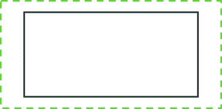

1. Understand Box model in CSS

Look at this picture
This is the model for most of HTML elements, such as heading, body, h1, h2, div, etc...
The container, or box includes:
- Content: the innermost part of the box that could be images, texts, etc
- Padding: the layer between content and border
- Border: the perimeter of the box
- Margin: the outter space surrounding the box
2. The differences
In the model above, we can see the main difference between margin, border and padding: Border is the perimeter of the box we are working on( which coule be an images, text or paragraph, etc),
while Padding controls the space within the box, and Margin controls the space outside that box.
Padding can be set to 0px or above, to change the elements inside's size and how much background is visible within the box.
Margin can be set to 0px and above like padding but also can be set to auto and even have negative value.
Border can have different styles such as dotted, dashed, solid, groove, etc
3. The similarities
Either Margin or Padding could be used with Border to achieve the same result.
Lets consider the picture below

We have the container with dotted green border. The div-block inside has 0px padding and 100px margin.
The exact same appearance can be achieved by setting the container's padding to 100px and the div-block's margin to 0px.
However, depends on the situations, you can pick one over the other to make sure your designs look good on all the devices, as you will be using responsive web design for all of your projects.